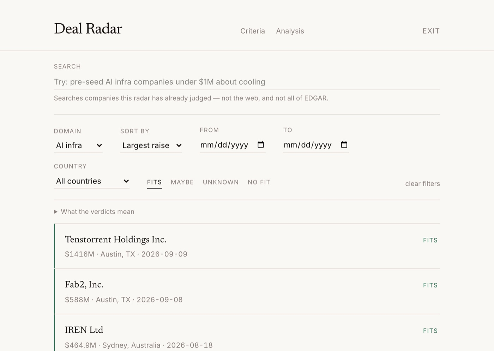
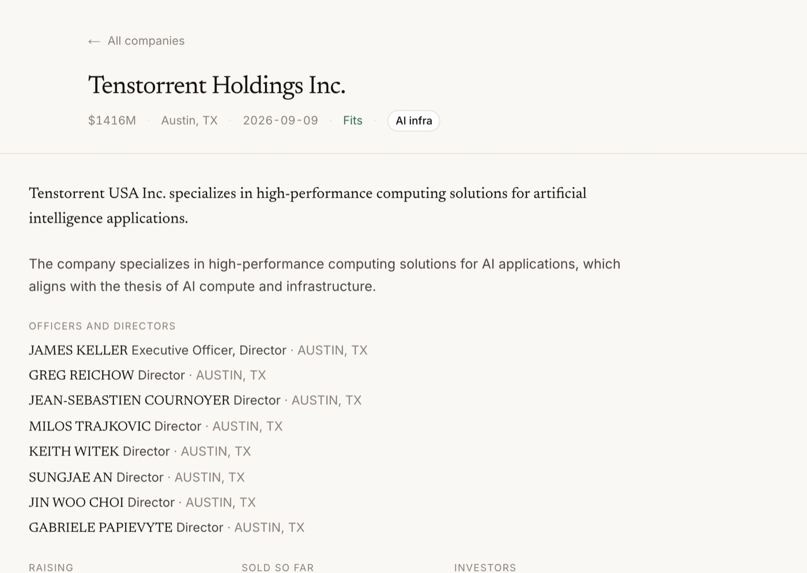
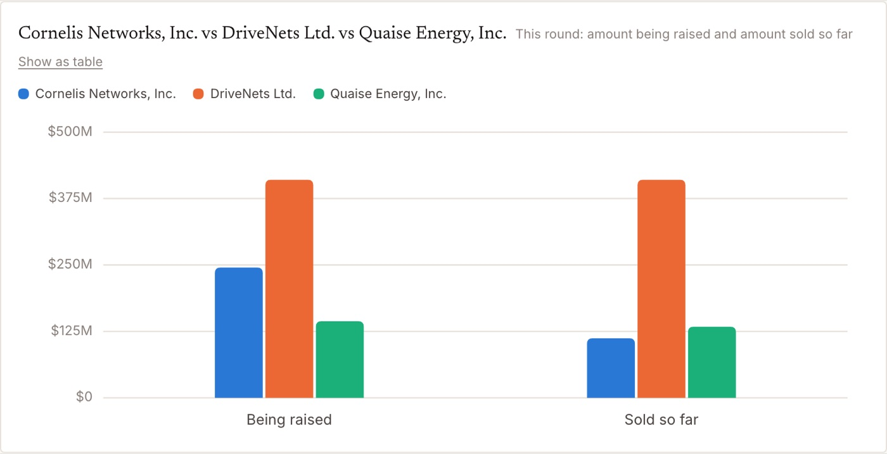
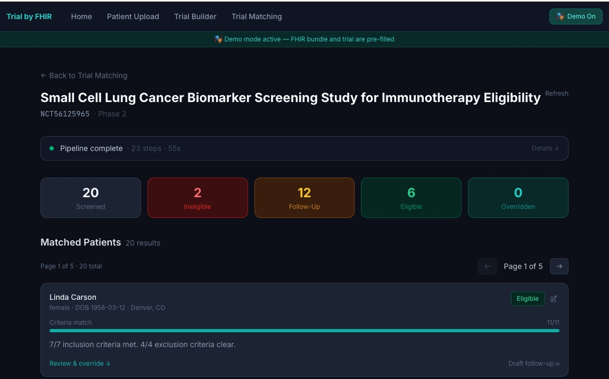
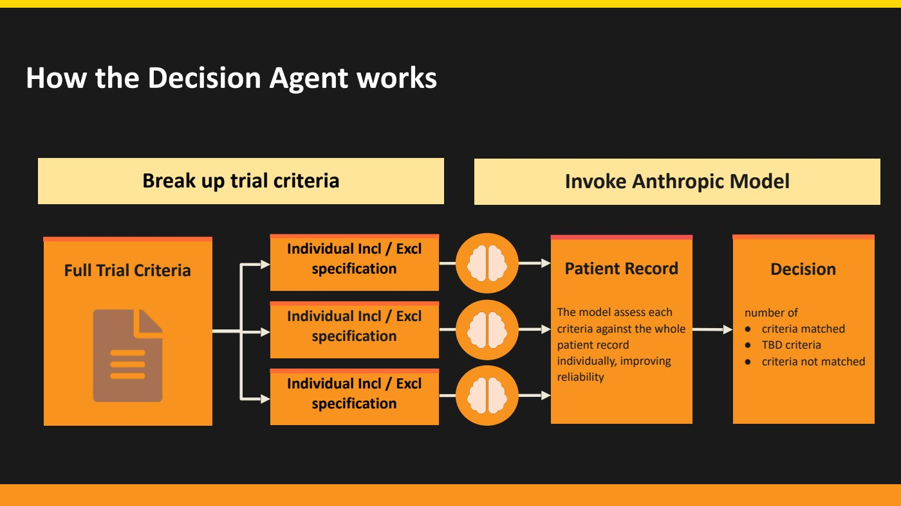
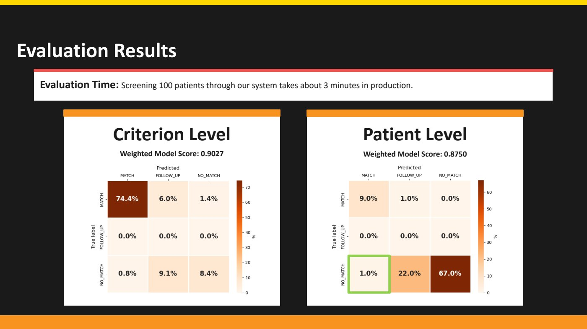

About
I like problems where the hard part isn't the model but knowing when to trust it. My projects tend to be small, working systems built against real, messy data (public filings, legislation, medical images), with the uncertainty left visible rather than smoothed over.
Project
Deal Radar
Every weekday it reads the companies that have just filed with the SEC to raise money, remembers which ones you've already seen, and judges the new ones against an investment thesis, often before the round is announced.






What it does
- Reads every Form D the SEC publishes, filters out funds and amendments, and looks up what each remaining company actually does.
- Judges each company against a domain's criteria with one of four verdicts (fits, maybe, unknown, no fit) and a one line reason.
- Remembers. A company you've seen never comes back, and your own verdict and note stay with it.
- Lets visitors try it: write your own criteria and watch them judged against companies already on the radar, or ask the analysis page for a chart.
Decisions worth a look in the code
- It never invents an answer. A failed lookup or a malformed model reply is recorded as a problem and retried, never turned into a verdict.
- “Unknown” came from the data: twelve of the first twenty “maybes” turned out to mean “couldn't find out”, so they became their own verdict.
- Public to read, private by construction. A visitor's database connection reads through views that leave out private domains and the owner's notes, so no page can leak them by forgetting a filter.
- The model plans, the code computes. For charts, the model only picks from a closed set of plans; every number is calculated in Python from the data the viewer is allowed to see.
- Cost is a design constraint: free filters run before paid ones, lookups are reused across domains, and visitor features run on a cheaper model with hard limits.
By the numbers
- 23,000+
- Form D filings archived since June 2026
- 1,800
- companies looked at and judged
- 550+
- tests, all running offline
- <$10
- a month to run, server included
Built with
- Python
- FastAPI
- Pydantic
- SQLite
- Next.js
- TypeScript
- Tailwind
- Claude via OpenRouter
- Tavily
- SEC EDGAR
- Oracle Cloud
- Tailscale
What went wrong
For seven weeks the search and model accounts ran out of credit. The radar kept running and its daily report said, correctly, that nothing could be examined and this was not a quiet day. Nobody was reading it. Honest failure reporting only helps if someone is watching. Because every filing had been archived, the backlog could be judged afterwards instead of lost.
Project · UC Berkeley MIDS capstone, Spring 2026 · team of five
Trial by FHIR
Screens patients against a clinical trial's eligibility criteria automatically, so researchers find the patients who qualify and patients hear about trials they could join, sooner.


My part
I designed the agent system at the core of the application and led the evaluation of the decision agent. I was responsible for how the decision agent works with clinical data: how it reads a patient's record against a trial's criteria and decides whether that patient is a match.
How the decision agent works
- One criterion at a time. A trial is split into its individual inclusion and exclusion criteria, and the model judges each one against the whole patient record. Smaller models make better decisions when they answer one question at a time.
- Missing is not the same as no. If the record doesn't mention something a criterion needs, the agent says so instead of assuming it's absent, and the patient is flagged for follow up rather than ruled in or out.
- Every decision explains itself. Each criterion comes back with its reasoning and the evidence it relied on, so a coordinator can check the call instead of trusting it.


How I evaluated it
- A purpose built test trial with 11 inclusion and exclusion criteria, and precise SQL queries over lab values, conditions and demographics to find the patients who truly should match.
- Labels at two levels: for every patient, and for every criterion of every patient.
- A score that rewards honesty. A correct answer earns full credit, sending a patient to follow up earns half, and a confident wrong answer earns nothing. Asking a person is better than guessing.
- 0.903
- criterion level weighted score
- 0.875
- patient level weighted score
- 0%
- of eligible patients wrongly rejected
- 1%
- of patients wrongly marked a match


What we learned
- Patient records are long, and most of a record is irrelevant to any one trial, so the important parts have to be filtered out before a model sees them.
- Models struggle with many criteria at once, which is why the agent takes them one at a time.
- Explainability matters. A decision without its reasons is much harder to check, so reasoning is part of every output.
The system around it
Patient records in the FHIR health data standard are loaded into PostgreSQL; the records are synthetic, generated with Synthea, so no real patient data is used. A query generated from the trial's criteria shortlists candidates, decision agents evaluate them in parallel on AWS Lambda, and AWS Step Functions runs the pipeline end to end.
Built with
- Python
- Go
- TypeScript
- AWS Step Functions
- AWS Lambda
- Amazon Bedrock
- Claude Haiku 4.5
- Aurora PostgreSQL
- AWS CDK
- FHIR R4
- Synthea
- ClinicalTrials.gov